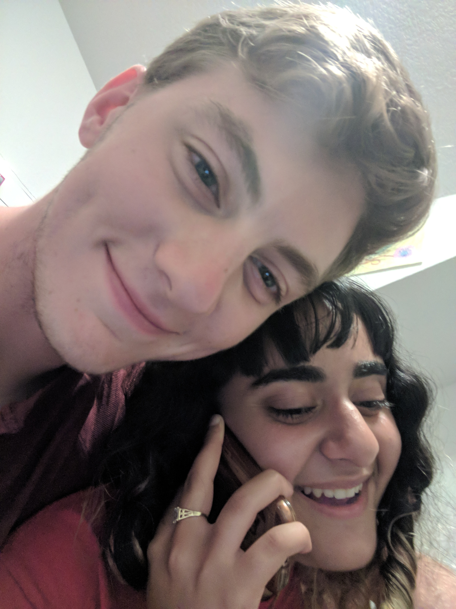
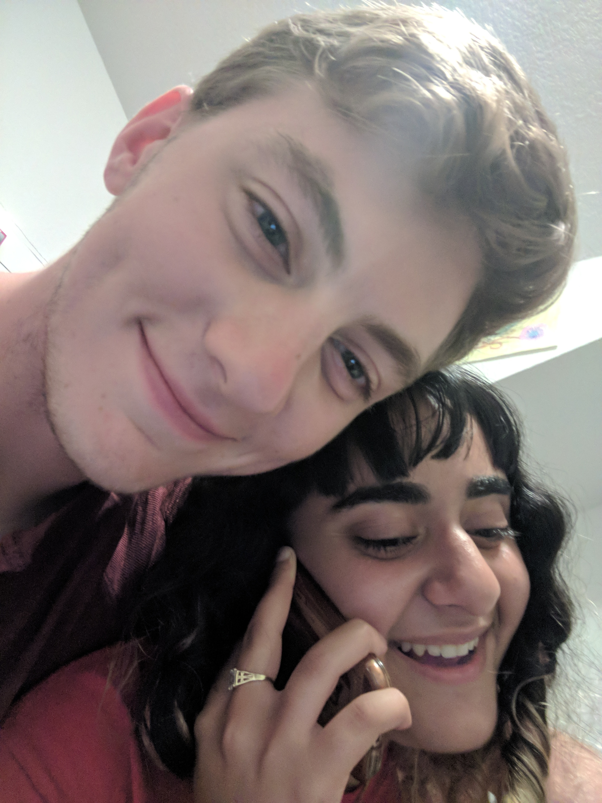
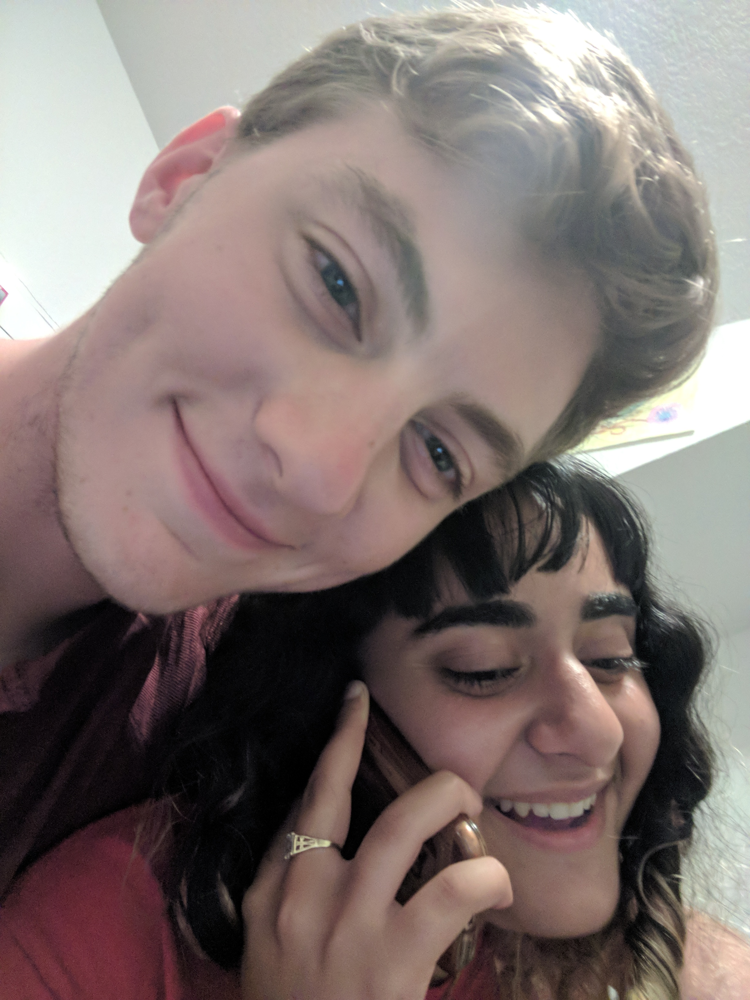

Sophmore year coming to school, everyone was adjusting to new living situations.
My friend had a house on Ellendale, one of the few people I knew not living in dorms or a frat.
She told me she would often watercolor, and invited me over to take a stab at it.
I invited my friend from high school who had just gotten to USC, and he brought a friend he had just made during Welcome Week.
A group of 5 of us listened to SZA, painted, and hung out for a few hours, and my friend who had hosted us (picture below) kept the art, adding my friends work to her collection. - MP
